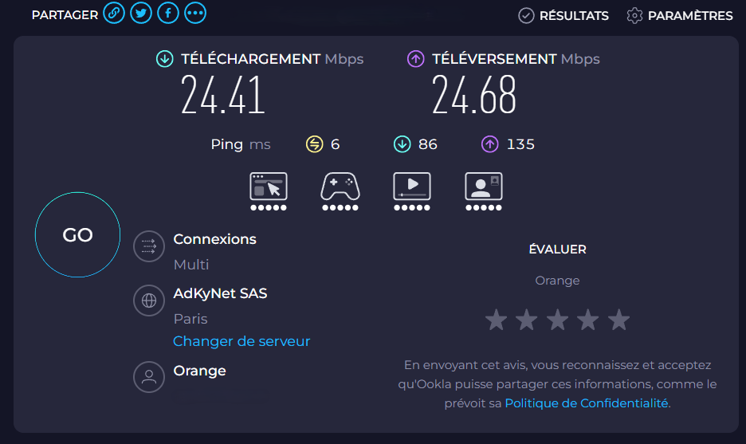
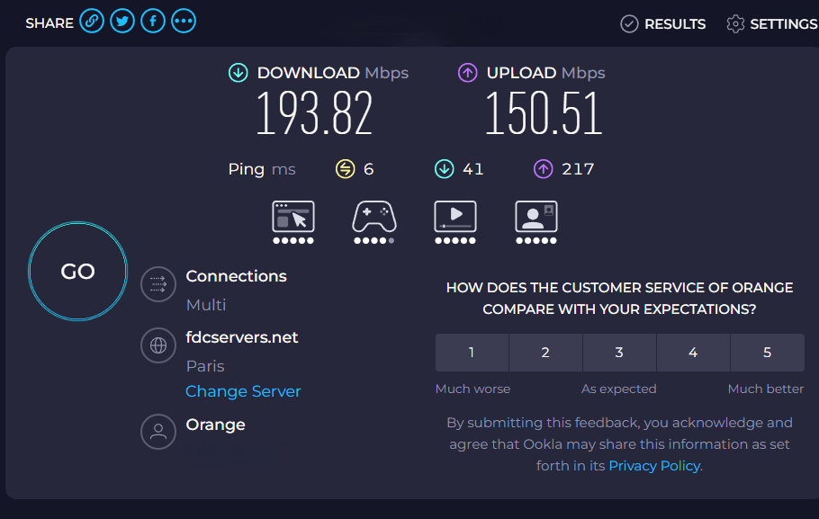
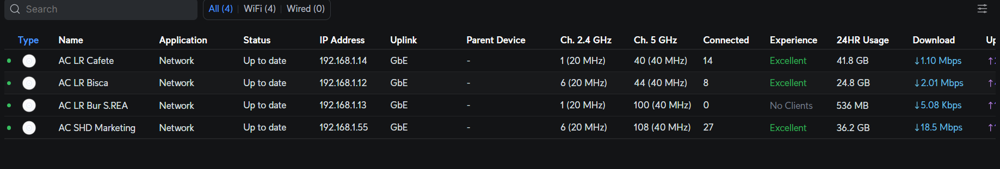
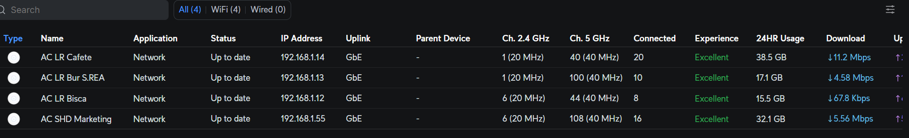
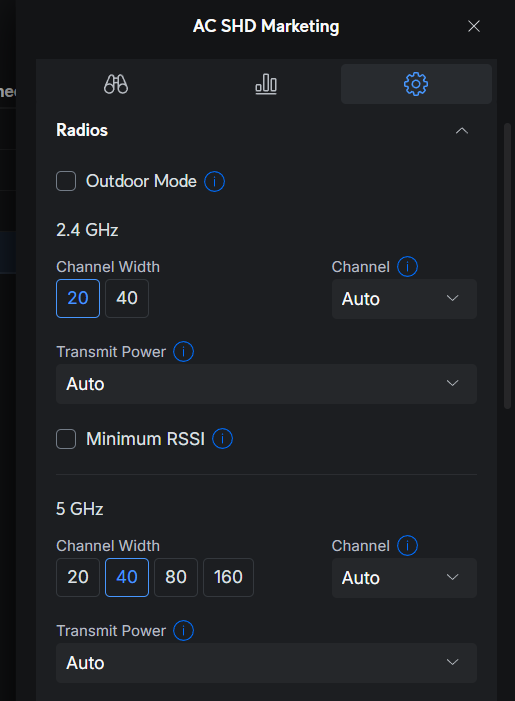
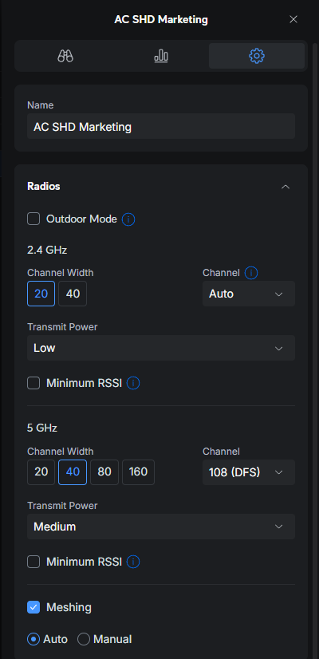

01Contexte
Les bureaux de l’entreprise sont reliés à Internet par la fibre. Le Wi-Fi est assuré par quatre bornes Ubiquiti UniFi AC LR, administrées par la UniFi Network Application installée dans un conteneur Docker sur un NAS. Le maillage (meshing) entre les bornes était déjà activé. Une même borne peut accueillir jusqu’à 27 appareils connectés.
02Expression du besoin
Les utilisateurs signalaient deux problèmes :
- un débit Wi-Fi extrêmement lent, qui rendait le travail quotidien difficile ;
- sur les quatre bornes déployées, une seule ne fonctionnait plus : la borne « AC LR Bur S.REA » restait adoptée par le contrôleur mais ne servait plus aucun client.
Diagnostic. En analysant la configuration, j’ai constaté que tous les paramètres radio des bornes étaient en mode automatique (canal et puissance d’émission). Le contrôleur pouvait donc modifier ces réglages à tout moment, sans maîtrise du recouvrement entre les bornes.
03Solution et mise en œuvre
- Remise en service de la borne inactive
Redémarrage de la borne depuis la UniFi Network Application. Le redémarrage réinitialise les radios et les services de l’équipement, puis le contrôleur lui réapplique sa configuration. La borne a recommencé à accepter des clients.
- Bande 2,4 GHz : puissance d’émission réduite
Passage de la puissance de « Auto » à « Low ». Cette bande porte loin et provoque du recouvrement entre les bornes ; la réduire limite les interférences et incite les appareils à se connecter en 5 GHz, plus rapide.
- Bande 5 GHz : puissance d’émission maîtrisée
Passage de la puissance de « Auto » à « Medium » afin que les zones de couverture des quatre bornes ne se chevauchent pas excessivement.
- Bande 5 GHz : canal fixe sur chaque borne
Remplacement de la sélection automatique du canal par un canal fixe sur chacune des quatre bornes, en conservant la largeur de 40 MHz déjà configurée. Les quatre canaux occupent des blocs distincts : aucun chevauchement n’est possible et le contrôleur ne peut plus placer deux bornes sur le même canal.
| Borne | Canal 5 GHz | Bloc occupé (40 MHz) |
|---|---|---|
| AC LR Cafete | 40 | 36 + 40 |
| AC LR Bisca | 44 | 44 + 48 |
| AC LR Bur S.REA | 100 | 100 + 104 |
| AC SHD Marketing | 108 | 108 + 112 |
04Tests et résultats
Méthode de test. Les mesures ont été réalisées avec trois appareils différents (un ordinateur ancien, un ordinateur récent et un smartphone) afin d’éliminer l’influence de la carte Wi-Fi d’un appareil en particulier. Un suivi a ensuite été maintenu pendant une semaine pour vérifier la stabilité des débits.
Résultat. Le débit est passé de 24,41 à 193,82 Mbps en téléchargement et de 24,68 à 150,51 Mbps en téléversement, ce qui a résolu durablement le problème signalé par les utilisateurs.




05Limites et perspectives
- Les bornes AC LR sont limitées au Wi-Fi 5 (802.11ac) : avec des canaux de 40 MHz et un appareil à deux antennes, le débit théorique plafonne autour de 400 Mbps, soit en pratique environ la moitié. Malgré la fibre, ce sont les bornes qui limitent le débit.
- Les canaux 100 et 108 sont des canaux DFS : en cas de détection d’un radar, la borne doit changer temporairement de canal.
- Perspective : remplacer les bornes par des modèles Wi-Fi 6 ou 6E compatibles avec le contrôleur actuel, pour augmenter le débit et mieux gérer le nombre d’appareils connectés.
06Compétences mobilisées
- Répondre aux incidents et aux demandes d’assistance et d’évolutionPrise en charge des signalements des utilisateurs, diagnostic de la borne inactive et des réglages radio, résolution et vérification.
- Mettre à disposition des utilisateurs un service informatiqueRétablissement d’un service Wi-Fi performant et stable pour l’ensemble des collaborateurs.
07Preuves







